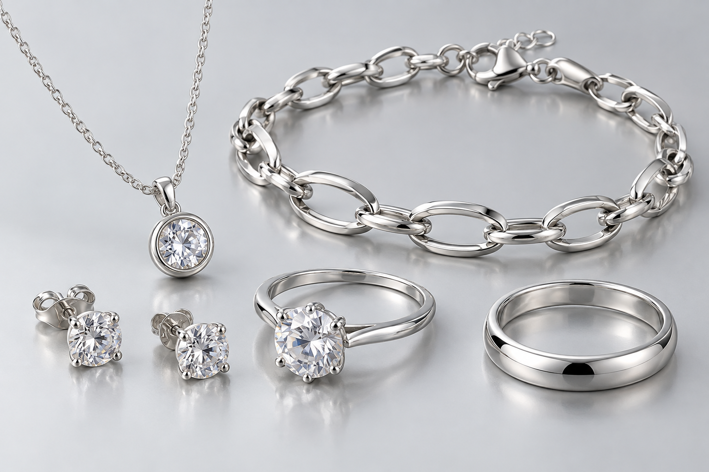
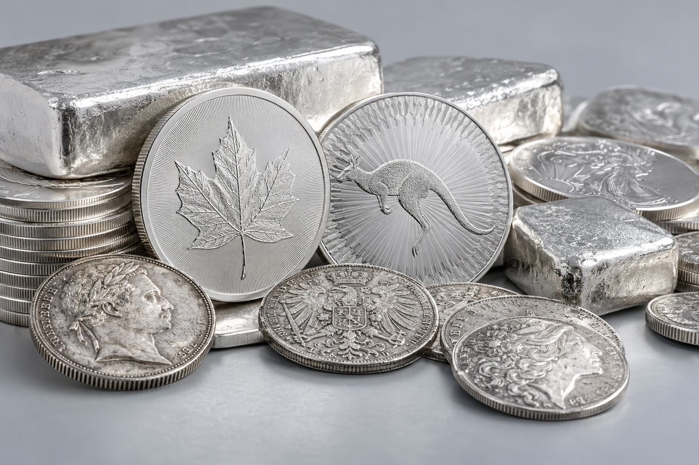
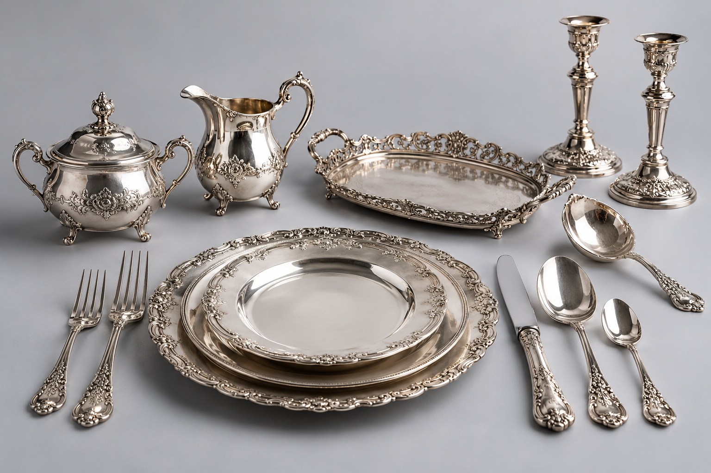
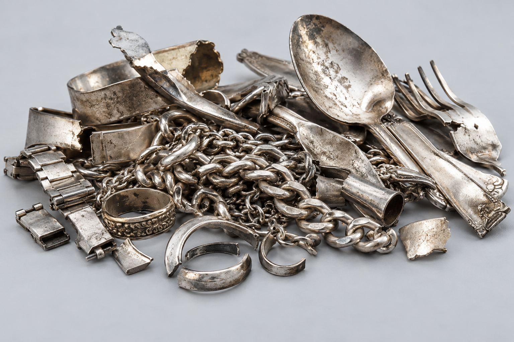
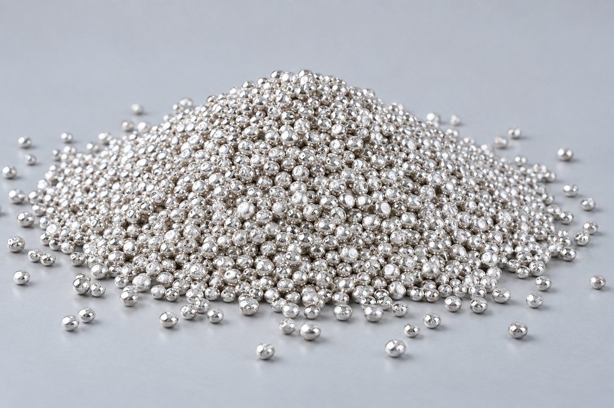

Praktyczne informacje: skup srebra Gorzów, monety, sztabki i biżuteria.

SKUP SREBRA GORZÓW
Jak przygotować srebro do wyceny w Gorzowie
Przed wizytą warto oddzielić srebrne przedmioty od pozostałych metali i przygotować je według rodzaju. W skupie srebra w Gorzowie najważniejsza jest masa, próba oraz stan przedmiotu. Biżuteria z kamieniami, stare sztućce czy granulat wymagają innego podejścia, dlatego spokojne uporządkowanie rzeczy przyspiesza rozmowę i ułatwia ocenę. Oznaczenia takie jak 800, 925 lub 999 bywają niewielkie, ale warto ich poszukać na zapięciach, spodach naczyń i brzegach monet. Nie czyść przedmiotów agresywną chemią tylko po to, aby wyglądały na nowe — patyna zwykle nie przeszkadza w rozpoznaniu metalu. Jeśli nie ma oznaczenia, nie przesądza to o braku srebra; w punkcie można zweryfikować materiał. Skup srebra Gorzów pomaga rozróżnić przedmioty użytkowe, biżuterię i produkty inwestycyjne. Przy większej liczbie rzeczy wygodnie jest spisać orientacyjną wagę oraz liczbę sztuk. Dzięki temu kalkulator daje bardziej czytelny wynik orientacyjny, a końcowa wycena może zostać wykonana sprawniej. Warto zachować rozsądek przy samodzielnej ocenie. Zdjęcia i kalkulator pozwalają się przygotować, lecz nie są badaniem laboratoryjnym ani wiążącą ofertą. Różnice w konstrukcji przedmiotu, ślady napraw, elementy nieszlachetne oraz brak czytelnej puncy mogą zmienić wynik. W razie wątpliwości najlepiej przynieść przedmiot w takim stanie, w jakim został znaleziony, razem z opakowaniem lub dokumentem, jeżeli je posiadasz. Nie trzeba podejmować decyzji od razu: dobrze jest zapytać o sposób oceny, potwierdzić próbę i dopiero potem porównać możliwości. Dla osób sprzedających większą ilość rzeczy pomocne jest rozdzielenie kategorii i spisanie masy. Skup srebra w Gorzowie ma służyć przejrzystej rozmowie o wartości metalu, a aktualne stawki pokazane na stronie są punktem odniesienia przed końcową weryfikacją. W ten sposób łatwiej odróżnić informację o rynku od ceny konkretnego przedmiotu i uniknąć przypadkowych pomyłek.

SKUP SREBRA GORZÓW
Próba 925 — co oznacza na biżuterii srebrnej?
Próba 925 oznacza, że w stopie znajduje się 925 części srebra na 1000 części materiału. Pozostała część stopu odpowiada za trwałość i codzienną odporność biżuterii. To najczęściej spotykane oznaczenie na łańcuszkach, pierścionkach, bransoletkach i kolczykach. W praktyce skup srebra w Gorzowie bierze pod uwagę masę całego przedmiotu, próbę oraz elementy, które nie są srebrem. Kamienie, szkło, stalowe sprężyny lub inne dodatki nie zwiększają masy metalu do wyceny. Dlatego przy biżuterii z dużym oczkiem warto traktować wynik kalkulatora jako punkt wyjścia. Oznaczenie może występować jako 925, S925 albo w formie drobnej puncy. Brak widocznego stempla nie musi niczego przesądzać, bo jest on czasem zatarty lub ukryty przy zapięciu. Najbezpieczniej nie zgadywać — oględziny pozwalają potwierdzić materiał. Skup srebra Gorzów wycenia zawartość metalu, a nie domyślnie markę czy wartość sentymentalną przedmiotu. Warto zachować rozsądek przy samodzielnej ocenie. Zdjęcia i kalkulator pozwalają się przygotować, lecz nie są badaniem laboratoryjnym ani wiążącą ofertą. Różnice w konstrukcji przedmiotu, ślady napraw, elementy nieszlachetne oraz brak czytelnej puncy mogą zmienić wynik. W razie wątpliwości najlepiej przynieść przedmiot w takim stanie, w jakim został znaleziony, razem z opakowaniem lub dokumentem, jeżeli je posiadasz. Nie trzeba podejmować decyzji od razu: dobrze jest zapytać o sposób oceny, potwierdzić próbę i dopiero potem porównać możliwości. Dla osób sprzedających większą ilość rzeczy pomocne jest rozdzielenie kategorii i spisanie masy. Skup srebra w Gorzowie ma służyć przejrzystej rozmowie o wartości metalu, a aktualne stawki pokazane na stronie są punktem odniesienia przed końcową weryfikacją. W ten sposób łatwiej odróżnić informację o rynku od ceny konkretnego przedmiotu i uniknąć przypadkowych pomyłek.
SKUP SREBRA GORZÓW
Monety srebrne: kiedy liczy się kruszec, a kiedy historia?
Monety mogą mieć dwie różne wartości: wartość srebra zawartego w stopie i wartość kolekcjonerską. Monety bulionowe są zwykle rozliczane według jasno określonej masy oraz próby, dlatego łatwo porównać je z aktualną ceną produktu. Monety historyczne wymagają większej ostrożności. Rocznik, nakład, stan zachowania i autentyczność mogą sprawić, że wartość kolekcjonerska będzie ważniejsza niż sam metal. W skupie srebra Gorzów warto pokazać monety osobno, bez czyszczenia i polerowania. Mocne czyszczenie może usunąć naturalną powierzchnię i obniżyć zainteresowanie kolekcjonerów. W kalkulatorze można wpisać masę i próbę, aby poznać orientacyjną wartość kruszcu. Taki wynik nie zastępuje oceny numizmatycznej, ale pomaga zrozumieć dolną granicę wartości metalu. Dla monet bulionowych aktualne pozycje i ceny są widoczne w cenniku. Warto zachować rozsądek przy samodzielnej ocenie. Zdjęcia i kalkulator pozwalają się przygotować, lecz nie są badaniem laboratoryjnym ani wiążącą ofertą. Różnice w konstrukcji przedmiotu, ślady napraw, elementy nieszlachetne oraz brak czytelnej puncy mogą zmienić wynik. W razie wątpliwości najlepiej przynieść przedmiot w takim stanie, w jakim został znaleziony, razem z opakowaniem lub dokumentem, jeżeli je posiadasz. Nie trzeba podejmować decyzji od razu: dobrze jest zapytać o sposób oceny, potwierdzić próbę i dopiero potem porównać możliwości. Dla osób sprzedających większą ilość rzeczy pomocne jest rozdzielenie kategorii i spisanie masy. Skup srebra w Gorzowie ma służyć przejrzystej rozmowie o wartości metalu, a aktualne stawki pokazane na stronie są punktem odniesienia przed końcową weryfikacją. W ten sposób łatwiej odróżnić informację o rynku od ceny konkretnego przedmiotu i uniknąć przypadkowych pomyłek.

SKUP SREBRA GORZÓW
Sztabki srebra 100 g, 500 g i 1 kg — jak je wycenić?
Sztabki srebra są produktami inwestycyjnymi, dlatego oprócz próby liczy się ich masa, stan i rozpoznawalność producenta. Najczęściej spotyka się wybite informacje takie jak FINE SILVER, 999,9 oraz gramaturę 100 g, 500 g albo 1 kg. Warto zachować opakowanie lub certyfikat, jeżeli były dołączone, choć ich brak nie musi przekreślać wyceny. Skup srebra w Gorzowie korzysta z aktualnych pozycji produktowych widocznych w cenniku. Dzięki temu ceny monet i sztabek można aktualizować w jednym miejscu. Na stronie zobaczysz cennik produktu, a w kalkulatorze możesz wskazać właściwą gramaturę. Przy sztabkach inwestycyjnych nie należy szorować powierzchni ani usuwać naklejek. Naturalne ślady przechowywania są mniej istotne niż potwierdzenie masy i materiału. Jeśli sztabka ma nietypową formę, wartość ostateczna wymaga sprawdzenia na miejscu. Warto zachować rozsądek przy samodzielnej ocenie. Zdjęcia i kalkulator pozwalają się przygotować, lecz nie są badaniem laboratoryjnym ani wiążącą ofertą. Różnice w konstrukcji przedmiotu, ślady napraw, elementy nieszlachetne oraz brak czytelnej puncy mogą zmienić wynik. W razie wątpliwości najlepiej przynieść przedmiot w takim stanie, w jakim został znaleziony, razem z opakowaniem lub dokumentem, jeżeli je posiadasz. Nie trzeba podejmować decyzji od razu: dobrze jest zapytać o sposób oceny, potwierdzić próbę i dopiero potem porównać możliwości. Dla osób sprzedających większą ilość rzeczy pomocne jest rozdzielenie kategorii i spisanie masy. Skup srebra w Gorzowie ma służyć przejrzystej rozmowie o wartości metalu, a aktualne stawki pokazane na stronie są punktem odniesienia przed końcową weryfikacją. W ten sposób łatwiej odróżnić informację o rynku od ceny konkretnego przedmiotu i uniknąć przypadkowych pomyłek.

SKUP SREBRA GORZÓW
Srebrne sztućce i zastawy — na co zwrócić uwagę?
Srebrne sztućce, tace, cukiernice i naczynia bywają oznaczone próbą, ale czasem posiadają tylko znak wytwórcy lub informację o platerowaniu. To ważna różnica: przedmiot posrebrzany ma cienką warstwę srebra na innym metalu i nie jest tym samym co wyrób ze srebra. W skupie srebra Gorzów można rozpocząć od wyszukania oznaczeń na spodzie naczynia albo na trzonku sztućca. Kompletny zestaw warto przynieść razem, również gdy część elementów jest uszkodzona. Nie trzeba usuwać ciemnej patyny ani polerować detali. Dla wyceny metalu istotna jest próba i masa srebrnej części, a nie połysk po domowym czyszczeniu. Jeżeli przedmiot ma drewnianą rączkę, wypełnienie lub elementy z innego metalu, masa tych dodatków zostaje odjęta. To pozwala uzyskać uczciwszy wynik orientacyjny. Warto zachować rozsądek przy samodzielnej ocenie. Zdjęcia i kalkulator pozwalają się przygotować, lecz nie są badaniem laboratoryjnym ani wiążącą ofertą. Różnice w konstrukcji przedmiotu, ślady napraw, elementy nieszlachetne oraz brak czytelnej puncy mogą zmienić wynik. W razie wątpliwości najlepiej przynieść przedmiot w takim stanie, w jakim został znaleziony, razem z opakowaniem lub dokumentem, jeżeli je posiadasz. Nie trzeba podejmować decyzji od razu: dobrze jest zapytać o sposób oceny, potwierdzić próbę i dopiero potem porównać możliwości. Dla osób sprzedających większą ilość rzeczy pomocne jest rozdzielenie kategorii i spisanie masy. Skup srebra w Gorzowie ma służyć przejrzystej rozmowie o wartości metalu, a aktualne stawki pokazane na stronie są punktem odniesienia przed końcową weryfikacją. W ten sposób łatwiej odróżnić informację o rynku od ceny konkretnego przedmiotu i uniknąć przypadkowych pomyłek.

SKUP SREBRA GORZÓW
Złom srebra i uszkodzona biżuteria też mają wartość
Zerwany łańcuszek, pojedynczy kolczyk, pęknięty pierścionek czy fragment sztućca nie muszą leżeć bezczynnie w szufladzie. Jeżeli element jest wykonany ze srebra, jego stan wizualny nie przekreśla wartości metalu. Skup srebra Gorzów obejmuje również złom srebrny, czyli uszkodzone przedmioty, ścinki i pojedyncze fragmenty. Najlepiej zebrać takie rzeczy w jednym woreczku, bez mieszania ich z metalami nieszlachetnymi. W kalkulatorze wybierz biżuterię i złom, wpisz wagę oraz próbę, a gdy przedmiot ma kamienie lub dodatkowe części — odejmij ich orientacyjną masę. Wynik jest pomocny, ale końcowa weryfikacja zawsze opiera się na oględzinach. Złom srebra może mieć różne próby, dlatego oddzielanie oznaczonych elementów ułatwia wycenę. Warto zachować rozsądek przy samodzielnej ocenie. Zdjęcia i kalkulator pozwalają się przygotować, lecz nie są badaniem laboratoryjnym ani wiążącą ofertą. Różnice w konstrukcji przedmiotu, ślady napraw, elementy nieszlachetne oraz brak czytelnej puncy mogą zmienić wynik. W razie wątpliwości najlepiej przynieść przedmiot w takim stanie, w jakim został znaleziony, razem z opakowaniem lub dokumentem, jeżeli je posiadasz. Nie trzeba podejmować decyzji od razu: dobrze jest zapytać o sposób oceny, potwierdzić próbę i dopiero potem porównać możliwości. Dla osób sprzedających większą ilość rzeczy pomocne jest rozdzielenie kategorii i spisanie masy. Skup srebra w Gorzowie ma służyć przejrzystej rozmowie o wartości metalu, a aktualne stawki pokazane na stronie są punktem odniesienia przed końcową weryfikacją. W ten sposób łatwiej odróżnić informację o rynku od ceny konkretnego przedmiotu i uniknąć przypadkowych pomyłek.
SKUP SREBRA GORZÓW
Granulat srebrny — czym różni się od złomu?
Granulat srebrny ma postać drobnych kulek lub nieregularnych ziaren i jest używany między innymi w jubilerstwie oraz procesach przemysłowych. W odróżnieniu od złomu zwykle jest bardziej jednorodny, dlatego ważne są jego masa i potwierdzona próba. Na stronie skupu srebra w Gorzowie granulat ma osobną kategorię, aby nie mieszać go ze złomem, biżuterią ani sztućcami. Granulat powinien być przechowywany w szczelnym pojemniku lub woreczku, by nie rozsypywał się i nie mieszał z innymi materiałami. Przygotowując go do wyceny, nie dodawaj do środka drobinek innych metali, kamieni czy elementów technicznych. Kalkulator pokazuje orientacyjny wynik dla wybranej próby, a finalna cena wynika z potwierdzenia zawartości srebra. Aktualne stawki są regularnie aktualizowane, dzięki czemu pozostają spójne z cennikiem. Warto zachować rozsądek przy samodzielnej ocenie. Zdjęcia i kalkulator pozwalają się przygotować, lecz nie są badaniem laboratoryjnym ani wiążącą ofertą. Różnice w konstrukcji przedmiotu, ślady napraw, elementy nieszlachetne oraz brak czytelnej puncy mogą zmienić wynik. W razie wątpliwości najlepiej przynieść przedmiot w takim stanie, w jakim został znaleziony, razem z opakowaniem lub dokumentem, jeżeli je posiadasz. Nie trzeba podejmować decyzji od razu: dobrze jest zapytać o sposób oceny, potwierdzić próbę i dopiero potem porównać możliwości. Dla osób sprzedających większą ilość rzeczy pomocne jest rozdzielenie kategorii i spisanie masy. Skup srebra w Gorzowie ma służyć przejrzystej rozmowie o wartości metalu, a aktualne stawki pokazane na stronie są punktem odniesienia przed końcową weryfikacją. W ten sposób łatwiej odróżnić informację o rynku od ceny konkretnego przedmiotu i uniknąć przypadkowych pomyłek.
SKUP SREBRA GORZÓW
Dlaczego aktualny cennik skupu srebra jest ważny?
Cena srebra zmienia się wraz z notowaniami rynku, dlatego cennik powinien być aktualny i czytelny. Na stronie skupu srebra Gorzów ceny prób 800, 925 i 999 są aktualizowane. Warto jednak pamiętać, że kurs giełdowy to nie to samo co cena skupu konkretnego przedmiotu. Biżuteria, złom, granulat, monety bulionowe i sztabki są rozliczane według różnych zasad. Kurs pomaga zrozumieć kierunek rynku, a cennik przedstawia stawki używane przy orientacyjnej wycenie. Końcowa oferta wymaga sprawdzenia masy, próby i rodzaju produktu. Przejrzysta prezentacja danych pozwala przygotować przedmioty i porównać warianty jeszcze przed wizytą w punkcie. Warto zachować rozsądek przy samodzielnej ocenie. Zdjęcia i kalkulator pozwalają się przygotować, lecz nie są badaniem laboratoryjnym ani wiążącą ofertą. Różnice w konstrukcji przedmiotu, ślady napraw, elementy nieszlachetne oraz brak czytelnej puncy mogą zmienić wynik. W razie wątpliwości najlepiej przynieść przedmiot w takim stanie, w jakim został znaleziony, razem z opakowaniem lub dokumentem, jeżeli je posiadasz. Nie trzeba podejmować decyzji od razu: dobrze jest zapytać o sposób oceny, potwierdzić próbę i dopiero potem porównać możliwości. Dla osób sprzedających większą ilość rzeczy pomocne jest rozdzielenie kategorii i spisanie masy. Skup srebra w Gorzowie ma służyć przejrzystej rozmowie o wartości metalu, a aktualne stawki pokazane na stronie są punktem odniesienia przed końcową weryfikacją. W ten sposób łatwiej odróżnić informację o rynku od ceny konkretnego przedmiotu i uniknąć przypadkowych pomyłek.
SKUP SREBRA GORZÓW
Skup srebra Gorzów: jak wycenić stare sztućce i zastawę?
Srebrne widelce, łyżki, noże, cukiernice i patery często trafiają do domu po rodzinie. Przy wycenie liczy się przede wszystkim próba, masa oraz to, czy cały przedmiot jest wykonany ze srebra. Wiele zastaw ma oznaczenia 800, 830, 835, 900 lub 925, umieszczone na spodzie albo przy uchwycie. Skup srebra Gorzów pomaga rozpoznać takie sygnatury i oddzielić srebro od wyrobów posrebrzanych. Nie trzeba samodzielnie polerować sztućców ani usuwać patyny — ważniejsze jest bezpieczne przygotowanie kompletu i zebranie wszystkich elementów w jednym miejscu. Jeśli w zestawie są noże ze stalowymi ostrzami, ich konstrukcja może mieć wpływ na masę metalu do wyceny. Warto zabrać całe komplety, także pojedyncze sztuki oraz niekompletne zastawy. Dzięki temu skup srebra w Gorzowie może sprawnie ocenić, które przedmioty mają zawartość srebra i jak je ująć w wycenie. Warto zachować rozsądek przy samodzielnej ocenie. Zdjęcia i kalkulator pozwalają się przygotować, lecz nie są badaniem laboratoryjnym ani wiążącą ofertą. Różnice w konstrukcji przedmiotu, ślady napraw, elementy nieszlachetne oraz brak czytelnej puncy mogą zmienić wynik. W razie wątpliwości najlepiej przynieść przedmiot w takim stanie, w jakim został znaleziony, razem z opakowaniem lub dokumentem, jeżeli je posiadasz. Nie trzeba podejmować decyzji od razu: dobrze jest zapytać o sposób oceny, potwierdzić próbę i dopiero potem porównać możliwości. Dla osób sprzedających większą ilość rzeczy pomocne jest rozdzielenie kategorii i spisanie masy. Skup srebra w Gorzowie ma służyć przejrzystej rozmowie o wartości metalu, a aktualne stawki pokazane na stronie są punktem odniesienia przed końcową weryfikacją. W ten sposób łatwiej odróżnić informację o rynku od ceny konkretnego przedmiotu i uniknąć przypadkowych pomyłek.
SKUP SREBRA GORZÓW
Granulat srebrny — co warto wiedzieć przed sprzedażą?
Granulat srebrny to drobne ziarna metalu, spotykane między innymi w pracowniach jubilerskich, odlewniach i przy odzysku surowca. W skupie srebra najważniejsza jest jego próba oraz rzeczywista masa. Granulat może mieć różną czystość, dlatego oznaczenie 999 lub 999,9 warto traktować jako ważną informację, ale nie zastępuje ono sprawdzenia materiału. Przed wizytą dobrze jest przechowywać granulat w szczelnym pojemniku albo woreczku, tak aby nie mieszał się z innymi metalami i zabrudzeniami. Skup srebra Gorzów pozwala przygotować orientacyjną wycenę na podstawie aktualnej stawki za gram, a końcowa ocena uwzględnia potwierdzoną próbę. Jeśli masz kilka partii granulatu o różnym pochodzeniu, warto rozdzielić je osobno. To ułatwia ważenie i pomaga uniknąć łączenia materiałów o różnych parametrach. Warto zachować rozsądek przy samodzielnej ocenie. Zdjęcia i kalkulator pozwalają się przygotować, lecz nie są badaniem laboratoryjnym ani wiążącą ofertą. Różnice w konstrukcji przedmiotu, ślady napraw, elementy nieszlachetne oraz brak czytelnej puncy mogą zmienić wynik. W razie wątpliwości najlepiej przynieść przedmiot w takim stanie, w jakim został znaleziony, razem z opakowaniem lub dokumentem, jeżeli je posiadasz. Nie trzeba podejmować decyzji od razu: dobrze jest zapytać o sposób oceny, potwierdzić próbę i dopiero potem porównać możliwości. Dla osób sprzedających większą ilość rzeczy pomocne jest rozdzielenie kategorii i spisanie masy. Skup srebra w Gorzowie ma służyć przejrzystej rozmowie o wartości metalu, a aktualne stawki pokazane na stronie są punktem odniesienia przed końcową weryfikacją. W ten sposób łatwiej odróżnić informację o rynku od ceny konkretnego przedmiotu i uniknąć przypadkowych pomyłek.
SKUP SREBRA GORZÓW
Srebrne talerze, patery i naczynia: srebro czy posrebrzanie?
Stare talerze, misy, świeczniki i patery mogą wyglądać jak srebro, ale nie każdy błyszczący przedmiot zawiera srebro w całej swojej masie. Wyroby posrebrzane mają cienką warstwę srebra na innym metalu, dlatego ich wycena przebiega inaczej niż w przypadku naczyń wykonanych ze stopu 800 lub 925. Warto obejrzeć spód przedmiotu i szukać punc, cyfr albo znaków wytwórcy. Skup srebra w Gorzowie pomaga odróżnić oznaczenia prób od symboli informujących jedynie o powłoce. Przygotowując przedmioty do wyceny, nie używaj silnych środków chemicznych ani nie próbuj usuwać elementów konstrukcyjnych. Naczynie z dekoracją, uchwytami lub wkładami może wymagać osobnej oceny masy. Skup srebra Gorzów pozwala uzyskać jasną informację, czy przedmiot nadaje się do wyceny jako srebro, zanim podejmiesz decyzję o sprzedaży. Warto zachować rozsądek przy samodzielnej ocenie. Zdjęcia i kalkulator pozwalają się przygotować, lecz nie są badaniem laboratoryjnym ani wiążącą ofertą. Różnice w konstrukcji przedmiotu, ślady napraw, elementy nieszlachetne oraz brak czytelnej puncy mogą zmienić wynik. W razie wątpliwości najlepiej przynieść przedmiot w takim stanie, w jakim został znaleziony, razem z opakowaniem lub dokumentem, jeżeli je posiadasz. Nie trzeba podejmować decyzji od razu: dobrze jest zapytać o sposób oceny, potwierdzić próbę i dopiero potem porównać możliwości. Dla osób sprzedających większą ilość rzeczy pomocne jest rozdzielenie kategorii i spisanie masy. Skup srebra w Gorzowie ma służyć przejrzystej rozmowie o wartości metalu, a aktualne stawki pokazane na stronie są punktem odniesienia przed końcową weryfikacją. W ten sposób łatwiej odróżnić informację o rynku od ceny konkretnego przedmiotu i uniknąć przypadkowych pomyłek.
SKUP SREBRA GORZÓW
Skup srebra w Gorzowie — biżuteria, złom i pojedyncze przedmioty
Do skupu srebra można przygotować nie tylko komplet biżuterii, ale również pojedyncze kolczyki, zerwany łańcuszek, pierścionek bez pary, uszkodzoną bransoletkę czy niewielkie fragmenty srebrnego złomu. Stan użytkowy przedmiotu nie przekreśla jego wartości metalu. Najważniejsze pozostają próba i masa części wykonanych ze srebra. Przed wizytą warto odłożyć kamienie, elementy stalowe lub inne dodatki do osobnej oceny, jeśli można to zrobić bez uszkodzenia przedmiotu. Skup srebra Gorzów obsługuje zarówno osoby z jednym drobnym przedmiotem, jak i klientów przygotowujących większą ilość srebra użytkowego. Kalkulator na stronie pomaga sprawdzić orientacyjną wartość, natomiast końcowa wycena jest ustalana po sprawdzeniu przedmiotu. Takie podejście pozwala przejrzyście odpowiedzieć na pytanie, ile może być warte srebro i jakie informacje warto zabrać ze sobą do punktu. Warto zachować rozsądek przy samodzielnej ocenie. Zdjęcia i kalkulator pozwalają się przygotować, lecz nie są badaniem laboratoryjnym ani wiążącą ofertą. Różnice w konstrukcji przedmiotu, ślady napraw, elementy nieszlachetne oraz brak czytelnej puncy mogą zmienić wynik. W razie wątpliwości najlepiej przynieść przedmiot w takim stanie, w jakim został znaleziony, razem z opakowaniem lub dokumentem, jeżeli je posiadasz. Nie trzeba podejmować decyzji od razu: dobrze jest zapytać o sposób oceny, potwierdzić próbę i dopiero potem porównać możliwości. Dla osób sprzedających większą ilość rzeczy pomocne jest rozdzielenie kategorii i spisanie masy. Skup srebra w Gorzowie ma służyć przejrzystej rozmowie o wartości metalu, a aktualne stawki pokazane na stronie są punktem odniesienia przed końcową weryfikacją. W ten sposób łatwiej odróżnić informację o rynku od ceny konkretnego przedmiotu i uniknąć przypadkowych pomyłek.